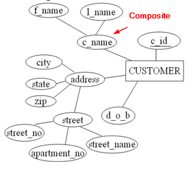

The process of moving from an abstract data model to the implementation of the database proceeds in two final design phases:
- logical Design Phase: The designer maps the high-level conceptual schema onto the implementation data model of the database system that will be used.
- Finally, the designer uses the resulting system-specific database schema in the subsequent physical design phase,in which the physical features of the database are specified
E-R Model- Entity : represented by rectangle
- Attribute : represented by ovals
- Relationships : represented by diamonds
Attribute Types- Simple Attribute: An attribute value which cannot be meaningfully subdivided
- Composite Attribute: An attribute value which can be meaningfully subdivided
-
- Single Valued Attribute: An attribute which which have single value
- Multi-valued Attribute: An attribute which have multi value.Representd by double oval

- Stored Attribute: An attribute with independent existence
- Derived Attribute: An attribute whose values depends on other stored attribute.Reoresented by dotted oval

- Descriptive Attribute: A relationship with attribute attached

Mapping Cardinality Representation
- M:N Relationship: An entity in A is associated with any number (zero or more) of entities in B and vice versa.

- 1:N Relationship: An entity in A is associated with any number (zero or more) of entities in B, an entity in B ,however, is associated with no more than one entity set of A .

- 1:1 Relationship: An entity in A is associated with no more then one entity in B and vice versa